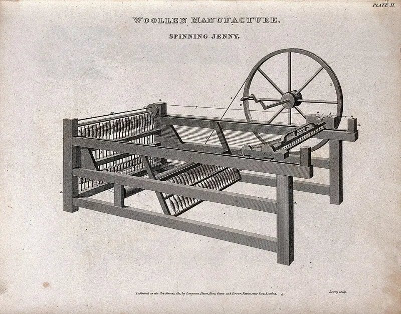
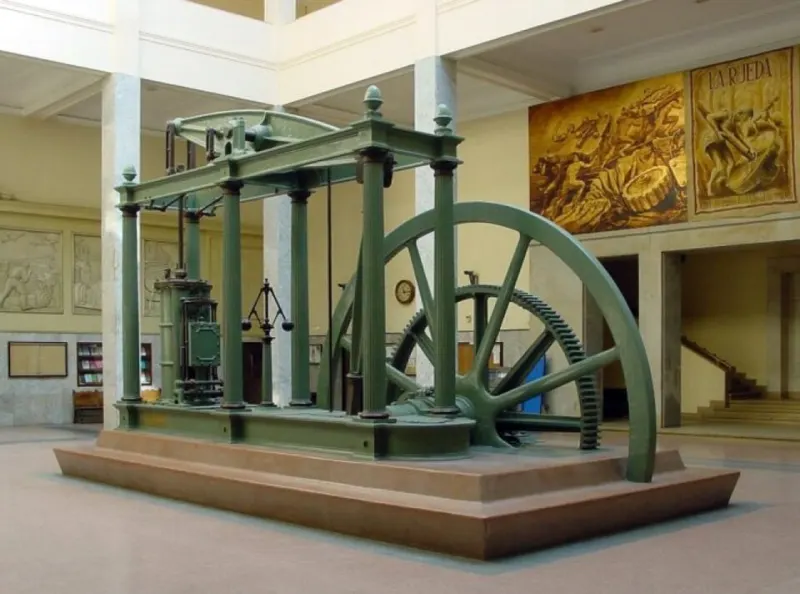
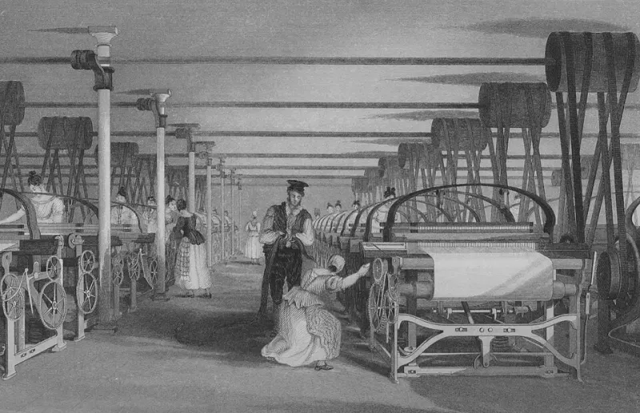
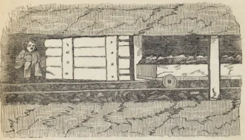
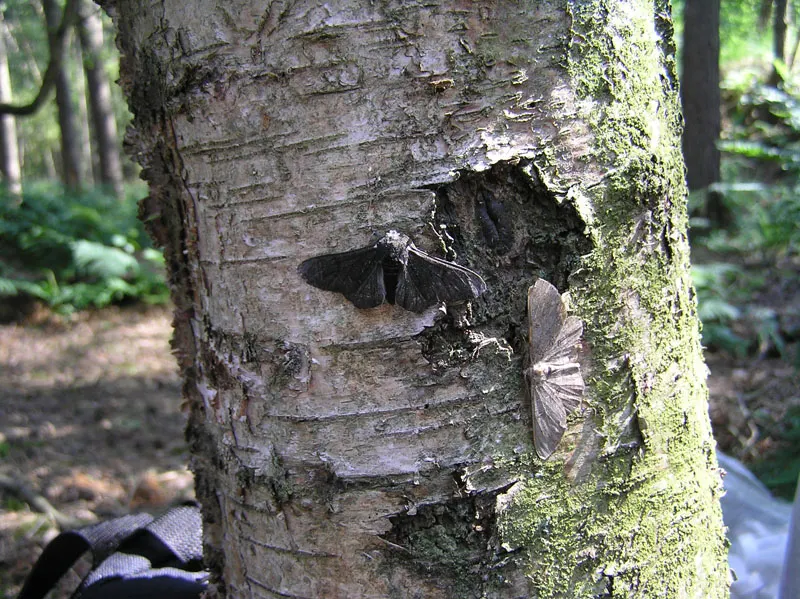
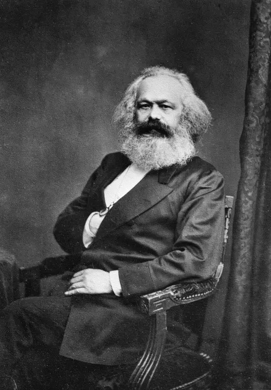
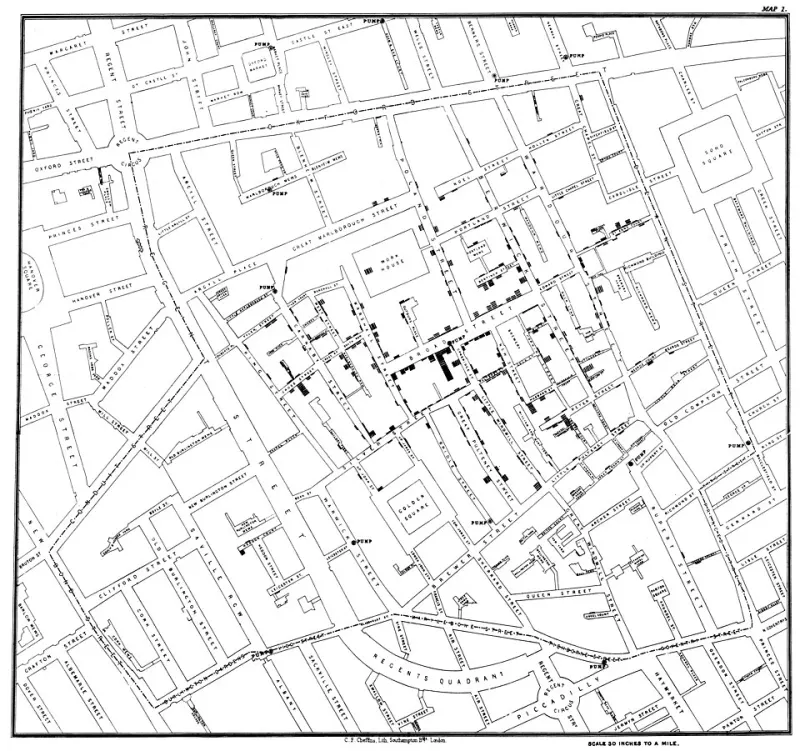
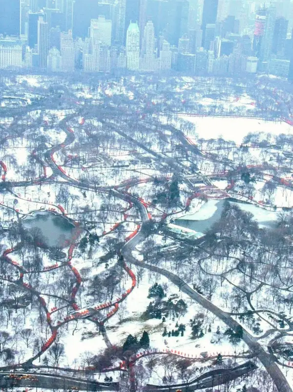

핵심 질문: 기계로 상품을 대량 생산하는 산업 혁명이 일어나면서 사회는 어떻게 변했을까? → 농촌 사회 → 도시 중심의 산업 사회로 바뀌었고, 물건은 풍부해졌지만 빈부 격차와 여러 문제도 생겼어.
2. 교과서 내용
① 영국에서 시작된 산업 혁명160쪽
17세기 이후 영국 동인도 회사가 인도에서 수입한 면직물은 모직물보다 염색이 잘 되고 세탁도 쉬워 인기가 많았다.
면직물은 삼각 무역에서 노예를 살 때 쓰는 국제 상품이기도 했다(130쪽 참고).
18세기에는 “인도산을 수입하지 말고 우리가 직접 만들자”는 생각이 커져 영국 안에서 면직물 공업이 발달했다.
그래서 18세기 후반 영국에서 면직물 공업의 기계화를 중심으로 산업 혁명이 시작됐다.
왜 하필 영국이었을까? — 산업화에 유리한 조건
💰자본일찍 확보한 식민지를 원료 공급지와 상품 판매처로 활용 → 많은 자본을 축적(모아서 쌓음)
👷노동력인클로저로 농촌을 떠난 농민들이 도시로 몰려듦 → 노동력이 풍부
영국 농민을 도시로 내몬 인클로저 — 160쪽
인클로저 ‘울타리 치기’라는 뜻
전농민은 마을의 공유지·미개간지를 함께 경작하고, 가축을 놓아 기르고, 땔감을 구하는 데 자유롭게 썼음
16세기~지주들이 양을 기르거나 농경지를 늘리려고 울타리를 쳐서 공유지를 사유지로 만듦 (“내 영역!”)
저항일부 주민은 울타리를 부수며 저항
결과많은 농민이 농촌을 떠나 도시로 → 공장 노동자가 됨 (“도시로 갈 수밖에 없네.”)
쉽게 말하면, 함께 쓰던 땅에 울타리가 쳐지자 농민들이 일할 곳을 잃고 도시로 갔고, 그 사람들이 공장에서 일하게 된 거야.
② 생산 기술의 혁신과 교통 혁명161쪽
면직물을 만들려고 실을 뽑는 방적기와 천을 짜는 방직기가 발명됐다.
특히 제임스 와트가 개량한 증기 기관을 새로운 동력(기계를 움직이는 에너지)으로 쓰면서 면직물 생산이 빠르게 늘었다.
기계의 발명과 기술 혁신으로 수공업 중심 생산이 공장제 기계 공업으로 바뀌었다.
방적기 실을 뽑는 기계 (적 = 실 뽑기) · 방직기 천을 짜는 기계 (직 = 짜기, ‘직물’의 직)

제니 방적기 (1811년 판화)
물레손으로 돌려 실을 한 가닥씩. 산업 혁명 전 보통 방법
제니18세기 중반 발명. 한 번에 8가닥 → 개량 후 120가닥!
방직기18세기 후반, 증기 기관 동력으로 빠르게 천을 짬. 한 사람이 여러 대를 동시에!

와트식 증기 기관 — 수증기의 힘으로 기계를 돌림

면직물 공장 (1835) — 증기 동력 방직기가 줄지어 있어
제임스 와트는 18세기 후반 증기 기관을 대폭 개량했어. 덕분에 증기 기관의 힘을 여러 기계에 쓸 수 있는 길이 열렸지.
교통 혁명
🚂증기 기관차 (1830년대 영국)전국이 철도망으로 연결 → 많은 사람과 물자를 먼 거리까지 짧은 시간에
🚢증기선 (1850년대 미국)돛을 단 배 범선을 대신해 강과 바다를 빠르고 안전하게
탐구1 답: 증기 기관의 동력을 이용한 기계 = 방직기(면직물 공장), 증기 기관차, 증기선. 물레와 처음 제니 방적기는 사람 손으로 돌렸어. 증기 기관은 광산·공장 등 여러 산업에도 쓰였어.
③ 자본주의 경제 체제의 성립162쪽
기계로 대량 생산하게 되자, 생산에 필요한 자본(돈·공장·기계)을 가진 자본가 계급이 성장했다.
🎩자본가
공장을 세워 경영 · 임금을 줌 →
← 공장에서 일(노동)을 함
👷노동자
이렇게 자본가가 이윤을 목적으로 노동자를 고용해 상품을 만드는 자본주의 경제 체제가 자리 잡았다.
농촌 중심 사회 → 도시 중심 산업 사회. 공장 지역에 사람이 몰리며 도시화가 빠르게 진행됐다.
다양한 상품이 대량 생산돼 물자가 풍부해지고, 상품 이동도 더 자유로워졌다.
18세기 후반영국에서 시작
19세기유럽 여러 나라(벨기에·프랑스·독일 등)와 미국으로 확산
19세기 말러시아와 일본도 산업화 추진 → 자본주의도 널리 퍼짐
산업 혁명이 가져온 일상생활의 변화 — 162쪽
⚽축구의 대중화상류층 스포츠 → 노동자 중심으로 널리 퍼짐. 노동자들이 만든 구단이 오늘날까지!
🏬백화점의 등장다양한 물건을 전시·판매. 주요 고객은 새롭게 떠오른 중산층 여성
☕차 문화의 유행상류층 음료 → 영국인 대다수의 음료. 공장 노동자도 쉬는 시간에 차를!
탐구2 답: 산업 혁명 때 노동자들이 만든 축구 구단 — 맨체스터 유나이티드(철도 노동자들이 만든 팀에서 시작), 아스널(런던 무기 공장 노동자들이 만듦) 등이 있어.
④ 사회·환경 문제와 사회주의 사상의 등장163쪽
산업 혁명의 풍요는 모두에게 돌아가지 못했고 빈부 격차가 커졌다.
⛏️노동 문제열악한 환경, 장시간 노동, 저임금. 여성은 더 나쁜 조건, 아이들도 일터로
🏚️도시 문제인구 급증 → 주택·상하수도 등 위생 시설 부족, 전염병과 범죄에 노출
🏭공해 문제공장의 검은 연기·석탄 가루로 공기가 오염

탄광에서 일하는 아이 (1842년 영국 보고서 그림)
“새벽 2시에 탄광으로 내려갑니다. 게으름을 피우면 채찍질을 당해요. 오후 2시가 되면 땅 위로 올라옵니다.”
좁은 갱도에서는 몸집이 작은 아이들이 일했다.
임금은 적었지만 가족 생계에 중요한 수입원이었다.
도시 문제: 공장 지대에 인구가 늘자 노동자들은 작은 집들이 다닥다닥 붙은 주택가에 살았다. “환기도 안 되는 비좁은 방 한 칸뿐이지만, 근처 공장에서 일해야 하니 어쩔 수 없지요.”
공해 문제: 19세기 말 영국 셰필드는 공장 연기로 공기가 더러웠다. 1873년 런던에선 짙은 노란 안개가 일주일간 덮어 기관지 질환으로 268명이 죽었다.

회색 얼룩나방과 검은색 얼룩나방
전회색 얼룩나방이 흔함
산업 혁명석탄 가루·매연으로 맨체스터의 나무가 검게 → 검은색 나방이 더 많아짐
뒤대기 오염이 줄자 다시 회색 나방이 많아짐
검은 나무에선 검은 나방이 눈에 안 띄어 새에게 덜 잡아먹혔어. 나방 색깔만 봐도 공기가 얼마나 더러웠는지 알 수 있는 거야.

마르크스
문제가 생기자 자본주의 체제를 비판하는 사회주의 사상이 등장했다.
마르크스와 엥겔스: 투쟁을 통해 노동자가 주인이 되는 사회를 만들어야 한다!
“자본주의를 무너뜨리고 토지나 공장 같은 생산 수단을 공유하는 사회를 만들어야 합니다.”
노동자·지식인의 호응을 얻어 유럽과 미국의 사회주의 운동에 영향을 줬다.
함께 확인해요 ① 제임스 와트는 (증기 기관)을/를 대폭 개량해 기계의 효율을 높였다. ② 산업 혁명 이후 → 빈부 격차, 장시간·저임금·아동 노동, 주택·위생 시설 부족과 전염병·범죄, 매연으로 인한 대기 오염이 생겼다.
⑤ 생각 쑥쑥 탐구 — 산업화에 따른 문제를 개선하기 위한 노력들164~165쪽
01 노동 환경에 눈 뜬 사람들
1818년 2월 영국 콜른브리지의 면화 공장에서 불이 났다. 밤샘 작업하던 26명 중 탈출하지 못한 소녀 17명이 사망했다. 추모탑에는 “마사 헤이(9세), 메리 헤이(9세) …”처럼 이름과 나이가 적혀 있다.
충격을 받은 영국 의회가 노동 실태를 조사했고, 이듬해 노동자를 보호하는 법(공장법)을 만들었다. 하지만 어긴 고용주에 대한 처벌이 약해 잘 지켜지지 않았다.
공장법 (1819)
공장법 (1833)
• 9세 미만 어린이 고용 금지 • 9~16세 청소년 하루 12시간 이상 노동 금지
• 9세 미만 어린이 고용 금지 • 9~13세 어린이 하루 9시간 이상 노동 금지 • 13~18세 청소년 하루 12시간 이상 노동 금지 • 18세 미만 야간작업 금지
9살 아이도 공장에서 하루 12시간 넘게 일했다는 뜻이야. 1833년 법이 조금 더 촘촘해졌지?
파업노동자들이 요구를 내걸고 대규모 파업 (예: 1877년 미국 철도 노동자 파업 — 회사가 임금을 깎자 반발)
노조저임금·장시간 노동에 맞서 노동조합 결성 → 처음엔 불법, 법이 바뀌며 점차 탄압받지 않게 됨
19세기 후반유럽 여러 나라 노동자가 선거권을 얻고 노동자 정당도 등장
02 공중 보건의 기반을 닦은 한 의사
1858년 그림: 템스강이 세 질병(디프테리아·스크로풀라·콜레라)을 영국의 여신 브리타니아에게 소개하는 모습. 도시는 커졌는데 쓰레기 처리·하수 시설이 없어 오염이 심했고, 템스강 물이 전염병을 퍼뜨렸다.

존 스노의 콜레라 지도 (1854, 런던) — 검은 막대 하나가 사망자 한 명
1854런던에 콜레라 발생
지도의사 존 스노가 사망자 주소를 지도에 점으로 표시
발견사망자가 몰린 곳 한가운데 공용 펌프!
해결펌프 손잡이를 떼자 사망자가 더 안 생김 (오수 구덩이의 더러운 물이 흘러들었던 것)
이후영국이 공중위생법을 보완 → 전 세계로
03 도시 환경을 개선한 사람들

하늘에서 본 뉴욕 센트럴 파크
미국: 19세기 중반 노동자·실업자 수천 명이 도시 환경 개선을 요구하며 시위 → 1857년 뉴욕 센트럴 파크 건설
영국: 19세기 말 도시에도 시골처럼 쾌적한 자연환경을 갖추자는 ‘전원도시 계획’. 모든 사람이 국가의 혜택을 누리고 빈민가가 없는 도시를 꿈꿈
1898년 책 『내일의 전원도시』가 전원도시 운동을 일으켜 세계 여러 곳에 전원도시가 세워졌다.
함께 탐구해요 ① 이런 노력 덕분에 오늘날 우리에게도 근로 시간 제한·어린이 노동 금지·노동조합, 깨끗한 상하수도와 공중위생, 도시 속 공원이 생겼어.
함께 탐구해요 ② 도시 환경 개선 사례: 서울 난지도는 원래 서울의 쓰레기를 묻던 곳이었는데, 지금은 하늘공원·난지 한강 공원으로 바뀌었어.
3. 꼭 외울 것
산업 혁명 시작18세기 후반 영국, 면직물 공업의 기계화
면직물모직물보다 염색·세탁 쉬움, 삼각 무역의 국제 상품
영국의 조건식민지(원료 공급지·판매처) → 자본 / 인클로저 → 노동력
인클로저‘울타리 치기’, 16세기 이후 지주가 양·농경지 위해 공유지를 사유지로
방적기 / 방직기실을 뽑는 기계 / 천을 짜는 기계
제니 방적기18세기 중반, 8가닥 → 120가닥
제임스 와트18세기 후반 증기 기관 대폭 개량
공장제 기계 공업수공업 → 공장에서 기계로
교통 혁명증기 기관차(철도망), 증기선(범선 대신)
자본주의자본가가 이윤 목적으로 노동자 고용, 노동자는 임금
확산19세기 유럽·미국 → 19세기 말 러시아·일본
일상 변화축구 대중화, 백화점(중산층 여성), 차 문화
문제빈부 격차, 노동(장시간·저임금·아동), 도시(주택·위생), 공해(얼룩나방, 1873 런던 268명)
마르크스·엥겔스사회주의, 노동자가 주인, 생산 수단 공유
콜른브리지 화재1818, 소녀 17명 사망 → 1819 공장법
공장법 18339세 미만 고용 금지, 9~13세 9시간, 13~18세 12시간, 18세 미만 야간 금지
노동자의 노력파업, 노동조합(처음 불법), 선거권·노동자 정당
존 스노1854 콜레라 지도, 공용 펌프 → 공중위생법
도시 환경1857 센트럴 파크, 영국 전원도시 계획(『내일의 전원도시』 1898)
4. 퀴즈
4. 퀴즈
그림 출처: 위키미디어 공용 — 제니 방적기(W. 로리 판화 1811, 웰컴 컬렉션, CC BY 4.0), 와트식 증기 기관(Nicolás Pérez, CC BY-SA 3.0), 면직물 공장(T. 알롬 그림 1835, 퍼블릭 도메인), 탄광의 아이(1842년 영국 아동 고용 조사 보고서, 퍼블릭 도메인), 얼룩나방(Martinowksy, CC BY-SA 3.0), 마르크스(J. J. E. 메이올 1875, 퍼블릭 도메인), 존 스노의 콜레라 지도(1854, 퍼블릭 도메인), 센트럴 파크(Rsssngw, CC0)